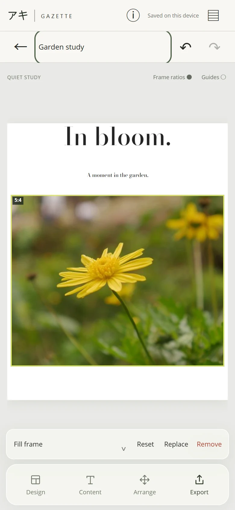
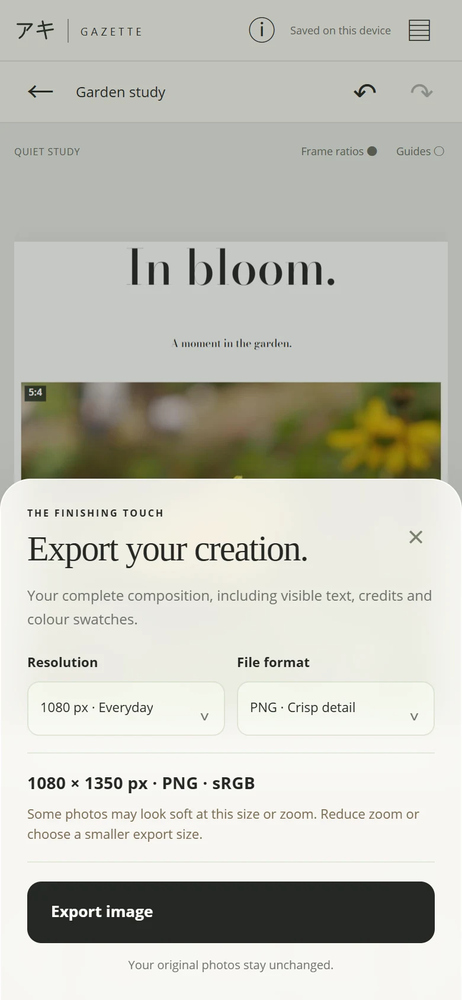

The editor / A closer look
A little practice.
A page of your own.
Start with one to nine photographs. A layout gives you a beginning; Preview and Arrange help you make it yours.
01 / Your process
Your photographs. Your framing.
Preview changes the photograph inside a frame. It keeps the frame’s position on the page.
- Tap a photograph to select it. Open Framing: Fill frame covers the frame and may crop the edges; Fit whole photo keeps the complete photograph visible.
- Drag the photograph to reposition it. Pinch inside its frame to zoom into the crop. Reset returns the crop to its starting point.
- Replace chooses another photograph for that frame. Remove takes it out of the composition; Undo can bring it back.
- To swap two photographs, hold one, then drag it onto the other frame and release.
When Design or Content is open, the first tap outside the panel only closes it. Tap again to select a photograph.

02 / Your process
Give each element its place.
Arrange changes frames, text and the color swatch group on the page. It does not change the crop inside a frame.
- Tap Arrange, then tap an item to select it. Tap it again to deselect, or tap another item to switch.
- Drag to move it. Use two fingers to pinch for size and twist for rotation. Once an item is selected, you can start these gestures elsewhere inside the preview, keeping your fingers away from the item.
- Alignment guides and snapping help with placement and familiar angles. Release your fingers to keep the change; Undo and Redo let you explore.
- The single-row toolbar offers Reset item, Remove and Done. Reset returns the selected item to its layout position. Done returns to Preview.
With a keyboard, arrow keys nudge a selected item and Escape deselects it.
03 / Your process
An image to keep.
- Tap Export. Choose PNG for crisp detail or JPEG for a familiar photo format.
- Choose a width of 1080, 1440 or 2160 px. Gazette shows the resulting height for your composition’s format.
- Select Watch ad to export, then choose Save to Photos, Save to Files or Share…. Gazette is free with export ads. A skipped, dismissed or unavailable ad still allows saving.
Your originals stay unchanged. A PNG or JPEG is a finished, flattened image; it does not retain separate editable text and frames.
Reopen an editable composition through Saved projects on the same device. Local projects are not cloud backups. Deleting the app or clearing its data can remove them, so keep exported images somewhere you want to preserve them.
Having trouble saving? Visit Gazette support.

Try a page of your own.
Gazette is available on iPhone and iPad through TestFlight. The App Store release is waiting for Apple’s review. The Android release is being prepared; no public Android download is available yet.
No Gazette account is required. Editor resources and fonts are bundled in the app; advertising and consent use a connection. Read the privacy policy for details.
Installation instructions